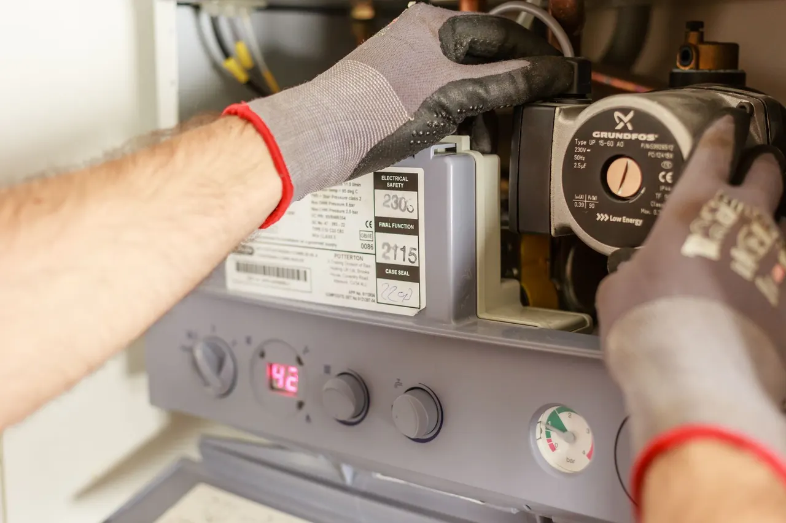

Hydro jetting Arlington Heights IL that clears what snaking leaves behind
When a drain keeps backing up no matter how many times you snake it, hydro jetting Arlington Heights IL gets to the actual cause. We run high-pressure water through your line, scouring grease, scale, sludge and root mass off the pipe walls instead of punching a small hole through the middle. Our team handles hydro jet drain cleaning Arlington Heights calls for older homes near Miner Street, busy kitchens on Vail Avenue and everything in between.
Every jetting job includes a camera inspection before and after, the jetting itself, a flow test at each fixture, and cleanup. If we find a problem jetting cannot fix, we show you the footage and explain the repair options. Add-ons like sewer line repair or replacement are quoted separately.
Pre-jet camera inspection
We run a RIDGID sewer camera down the line to identify the blockage, confirm pipe material and check for cracks or offsets. You see the screen with us. This step takes 15 to 30 minutes and determines whether jetting is safe.
High-pressure jetting
We jet the full line at 3,000 to 4,000 PSI, working from the cleanout to the main and back. Grease, scale, sludge and root mass flush out. Residential lines usually take 45 to 90 minutes of jetting time.
Post-jet camera verification
After jetting, we re-run the camera to confirm the pipe wall is clean and check for damage the cleaning may have revealed. If we see a problem, we show you and explain what it means before recommending anything.
Flow test at every fixture
We run water through every fixture on the line, including sinks, tubs and floor drains, to confirm full flow. If a branch line is still slow, we address it before we leave.
Cleanout cap and cleanup
We cap the cleanout, wipe down the work area and haul away any debris. Drop cloths protect floors and fixtures during the job. You should not be able to tell we were there except for the drain working.
Homes and businesses.
The approach is the same for a home and a business. What changes is the access, the schedule and who needs the paperwork.
For homes and rentals
We clear kitchen, bath and main lines in houses, condos and rentals. You get a camera check, a flat rate, and a flow test before we leave.
Kitchen sink slow or backing up
Main line backed up in basement
Recurring clogs after snaking
For businesses and property managers
We jet grease-heavy kitchen lines, restroom runs and main sewer lines for restaurants, offices and multi-unit buildings. Scheduling can be before open or after close.
Kitchen grease line backups
Multi-unit slow drains
Pre-inspection drain cleaning
Hydro jetting Arlington Heights IL: what it actually does
A plain-language look at what Hydro Jetting involves and when it is needed.
Hydro jetting Arlington Heights IL is a drain and sewer cleaning method that uses a specialized hose and nozzle to push water at 3,000 to 4,000 PSI through your pipe. The nozzle fires backward-facing jets that pull the hose forward while the forward jets blast the pipe wall clean. Unlike a drain snake or auger, which only bores a channel through the blockage, jetting removes the grease film, scale and debris that cause repeat clogs. Most residential lines take one to three hours from setup to final flow test.
In Arlington Heights, we see the same patterns again and again. Older homes around Old Arlington Heights and Scarsdale still have original cast iron and clay laterals that collect scale and root intrusion. Restaurants along the Miner Street Corridor push heavy grease loads through undersized lines. Every spring, snowmelt and heavy rain push debris into floor drains and sump pits near Creekside and Lake Arlington. If you have been searching for hydro jetting near me Arlington Heights IL because your line keeps backing up, the real fix is cleaning the full pipe diameter, not just poking a hole in the clog.
Hydro jetting cleans the full pipe wall, not just a channel through the clog.
What it is
High-pressure water cleaning that scours grease, scale and roots off the inside of drain and sewer pipes.
When you need it
Recurring clogs, slow drains, gurgling fixtures, or a line that has been snaked more than twice.
What to expect
A camera inspection, jetting at matched pressure, a flow test, and a plain explanation of the pipe condition.
What to expect during hydro jetting service
Every job follows the same five steps. You get a camera inspection first, a clear explanation of what we found, and a flow test before we pack up.
Camera inspection
We feed a sewer camera down the line to see the blockage, pipe material and condition. This takes 15 to 30 minutes and tells us whether jetting is the right call or whether the pipe needs repair first. You see the screen with us.
Camera
Inspect
Record
Access setup
We locate the cleanout, pull the cap, and set up the hydro jetter hose. We lay drop cloths and protect the work area.
Access
Protect
Set up
Jetting the line
The hydro jetter pushes water at 3,000 to 4,000 PSI through the line. We work from the cleanout toward the main, then back. Grease, scale and roots flush out and we watch the flow at each fixture. Most residential runs take 45 to 90 minutes.
Jet
Flush
Clear
Flow test and re-check
After jetting, we run water through every fixture on the line and re-run the camera to confirm the pipe is clean. If we see a crack, offset joint or bellied section, we show you and explain the repair options before anything else happens.
Test
Re-camera
Confirm
Cleanup and walkthrough
We cap the cleanout, clean the work area and walk you through what we found. You get a plain explanation of the pipe condition and how often to schedule the next cleaning based on your usage. No surprises on the invoice.
Cleanup
Cap
Walkthrough
Tools and methods we use for hydro jetting
Move across a circle, or focus it and press Enter, for an illustrative thermal view of the photograph.
Hydro jetter
Commercial-grade jetting machine that pushes water at 3,000 to 4,000 PSI through a specialized hose and nozzle. Different nozzles handle grease, roots and scale.
RIDGID sewer camera
Camera reel with a lighted head that records the inside of the pipe. We use it before and after jetting to verify condition and confirm the line is clean.
Drain snake and auger
Used for single fixture clogs and as a first pass when a line is fully blocked. Snaking opens a channel so the jetter hose can reach the blockage.
Milwaukee inspection tools
Cordless tools and lights used for cleanout access, fixture removal and work area setup. Reliable gear keeps the job moving.
Pressure gauge
Confirms the jetter is running at the correct pressure for the pipe material. Too much pressure on old clay or cast iron can cause damage.
Thermal views are illustrative, generated from the photographs.
Methods
Pipe wrench and tube cutter
Used to open cleanouts, remove fixture traps and cut damaged pipe sections when a repair is needed after jetting.
Camera-first inspection
We never jet a line without seeing it first. The camera tells us the pipe material, blockage type and whether jetting is safe. This 15 to 30 minute step prevents damage and confirms the right approach.
Pressure-matched jetting
We match water pressure to the pipe material. PVC pipe and ABS pipe handle 4,000 PSI. Older clay and cast iron may need 2,000 to 3,000 PSI. Matching pressure to the pipe is how we clean without causing damage.
Root cutting and flushing
For root intrusion, we use a root-cutting nozzle that slices roots at the pipe wall, then flush the debris out. We camera after to confirm the roots are gone and check for cracked pipe.
Flow verification
After jetting, we run water through every fixture on the line and watch the flow. If a branch line is still slow, we address it before we leave. The job is not done until the water runs clear and fast.
When to schedule hydro jetting service
Restaurant grease line
A restaurant kitchen line backs up during dinner service on a Friday night.
We respond with emergency jetting equipment and clear the grease blockage the same visit. After the emergency call, we set up a quarterly jetting schedule so the line never gets that bad again.
Outcome: The kitchen is back in service the same night, and the quarterly schedule prevents future Friday-night emergencies.
Scarsdale root intrusion
A homeowner in Scarsdale has snaked the same sewer line three times in 18 months.
We run a camera, find root intrusion at two joints, and jet the line to cut the roots back. The camera shows a small crack at one joint, so we quote a spot repair.
Outcome: The line flows full and the spot repair fixes the entry point, so roots stop coming back every year.
Old cast iron scale
A property manager near Arlington Market has a multi-unit building with slow drains on the first floor.
We camera the main and branch lines, find grease and scale buildup, and jet the full run. We also check the floor drains and sump pit for debris.
Outcome: All units drain normally, and the manager schedules annual jetting to keep the building off the emergency list.
Spring storm debris
A homeowner in the 60004 ZIP code notices gurgling sounds and slow drains after spring rain.
We inspect the line and find debris and root hairs washed in from the storm. Jetting clears the line, and we check the sump pump and floor drains while we are there.
Outcome: Drains flow normally, and the homeowner knows the sump pump is ready for the next storm.
Pre-inspection cleaning
A commercial building on the Vail Avenue Corridor needs drain maintenance before a health inspection.
We jet the kitchen and restroom lines, camera them after, and provide a clean bill of health on the drain system. Scheduling is done before business hours to avoid disruption.
Outcome: The inspection passes with no drain issues, and the manager has documentation of the cleaning.
Old Arlington HeightsScarsdaleMiner Street Corridor
How hydro jetting works in Arlington Heights
Arlington Heights has a mix of housing stock that shapes how we approach every jetting job. Homes built before 1960, especially around Old Arlington Heights and Scarsdale, often still have original cast iron or clay sewer laterals. Those pipes collect scale and are more vulnerable to root intrusion from parkway trees.
Newer builds off Arlington Market and Creekside use PVC pipe, which handles higher jetting pressure and rarely has root problems. Our winters matter too. From December through March, frozen pipes and ice-blocked vents are common, and we see a spike in calls after the first hard freeze. Spring brings snowmelt that pushes debris into floor drains and sump pits.
Cook County requires backflow testing on many commercial and irrigation systems, and we handle that alongside drain work. If you need same-day hydro jetting Arlington Heights IL service, call before noon and we can usually be on site the same afternoon.
Old Arlington Heights: Many homes here have original cast iron laterals that collect scale. Jetting restores flow, but we camera first to check for cracks before running high pressure.
Scarsdale: Mature parkway trees mean root intrusion is common in sewer lines. Annual jetting keeps roots from matting up and causing backups.
Miner Street Corridor: Restaurant and commercial kitchens here produce heavy grease loads. Quarterly jetting is the standard schedule for these lines.
Arlington Market: Newer construction with PVC pipe and ABS pipe. These lines handle full jetting pressure and rarely have root problems.
Creekside: Properties near the creek see more groundwater and storm debris in floor drains. We check sump pits and floor drains during jetting visits.
Freeze-thaw cycles from December through March: Frozen pipes and ice-blocked vents cause backups that look like clogs. We check for ice before jetting, because jetting a frozen line can make things worse.
IllustrativeThe thermal view is generated from the photograph. It is not a measurement. Drag the handle, or use the arrow keys once it is focused.
Restaurant grease line restored to full flow
Before: A Miner Street Corridor restaurant had a kitchen line that backed up every three weeks. Snaking cleared it temporarily, but the grease coating stayed on the pipe wall and rebuilt fast. The owner was losing service time on Friday nights.
After: We jetted the line at 4,000 PSI, stripped the grease film off the pipe wall and flushed it out. The camera showed a clean pipe after. Flow test at the three-compartment sink ran full. The owner scheduled quarterly jetting and has not had a backup in over a year.
Quarterly jetting keeps the grease from rebuilding. We also recommended a grease trap check and a strainer on the sink drain to reduce solids entering the line.
Root intrusion cleared in Scarsdale sewer line
Before: A Scarsdale homeowner had snaked the main sewer line three times in 18 months. Each time, the clog returned within a few months. A parkway maple had roots entering at two joints, and the camera showed a small crack at one of them.
After: We jetted the line with a root-cutting nozzle, cut the roots back to the pipe wall and flushed them out. The camera confirmed the roots were gone. We quoted a spot repair on the cracked joint, which the homeowner approved. The line has flowed full since.
Annual camera inspection and jetting keeps roots from returning. The spot repair closed the entry point, so future root growth has less chance to get in.
Older cast iron line cleaned in Old Arlington Heights
Before: A 1940s home in Old Arlington Heights had slow drains throughout the first floor. The cast iron lateral had decades of scale buildup, narrowing the pipe to about half its original diameter. Snaking did not help because there was no single clog.
After: We jetted the line at 3,000 PSI, matched to the older cast iron, and scoured the scale off the pipe wall. The camera showed a noticeably wider, cleaner pipe. First-floor drains ran full after the cleaning. The homeowner scheduled jetting every 18 months.
A water softener reduces scale buildup in the cast iron. We also recommended an annual camera check to monitor the pipe condition as it ages.
Drain problems hydro jetting solves in Arlington Heights
Most repeat drain calls trace back to the same handful of causes. Jetting addresses the cause, not just the symptom, which is why the fix lasts longer than snaking.
Grease coatingGrease and sludge coating the pipe wallSnaking pokes a hole through the grease, but the coating stays and rebuilds within weeks. You end up calling a plumber every few months for the same line. We jet the line at high pressure to strip the grease film off the pipe wall and flush it out. Kitchen lines in restaurants and busy homes get the most benefit. Quarterly jetting keeps commercial lines clear.

Root intrusionTree roots entering through joint gapsRoots find hairline cracks and loose joints, then expand into a mat that catches everything. Snaking cuts some roots but leaves the mat, so the clog returns fast. High-pressure water cuts roots back to the pipe wall and flushes them out. We camera the line after to check for damage. If roots have cracked the pipe, we explain repair options before the problem grows.
Scale buildupScale and mineral buildup in older pipesCast iron and clay laterals collect scale over decades, narrowing the pipe until even normal use backs up. This is common in pre-1960 homes around Old Arlington Heights and Scarsdale. Jetting scours scale off the pipe wall and restores flow. We measure the improvement with the camera and tell you how often to schedule cleaning based on the pipe condition and your water.
Repeat backupsRecurring backups after snakingIf a line has been snaked three or more times in a year, the pipe is probably still 70 to 80 percent blocked. You are paying for temporary fixes that never solve the problem. We camera the line to see what snaking missed, then jet the full diameter clean. If the camera shows a collapsed or bellied section, we quote a repair instead of selling you another cleaning.
A clean pipe wall means full flow and fewer repeat clogs.
Removes the full blockage
A drain snake leaves a channel through the clog; the pipe is still 80 percent blocked. Hydro jetting scours the entire circumference, so grease, scale and root mass go down the line instead of rebuilding within weeks. Most customers see full flow restored the same visit.
Handles root intrusion
Roots enter through joint gaps and hairline cracks, then expand into a mat that snaking cannot cut out. Jetting cuts the roots back to the pipe wall and flushes them out. For hydro jetting for tree roots Arlington Heights 60005 properties, this is usually the difference between a repair and a replacement.
Safe for the right pipes
We run a sewer camera first to confirm pipe material and condition. PVC pipe and ABS pipe handle jetting well. Older clay or corroded cast iron may need lower pressure or a different approach. That inspection step is why jetting does not damage a sound line.
Fewer repeat calls
Grease and sludge rebuild slowly after snaking because the film stays on the wall. Jetting leaves a clean pipe, so flow stays strong. Commercial kitchens that jet on a quarterly schedule cut emergency backups dramatically compared with snaking alone.
What you receive
Clear records you can keep and share.
Camera footage
Before and after video of the line
Flow report
Notes on fixture flow after cleaning
Job summary
What was cleaned and what we found
Maintenance note
Recommended schedule for your line
Jetting versus snaking: what the difference means
Snaking opens a channel through a clog. Jetting cleans the full pipe wall, which is why the results last longer.
Snaking
Cuts a path through the blockage
Fast for single clogs
Leaves grease on walls
Clog returns sooner
Jetting
Scours the full pipe circumference
Cleans grease and scale
Cuts roots at the wall
Results last longer
Camera check
Shows which method fits the pipe
Confirms pipe material
Finds cracks and offsets
Guides the right approach
Pipe materials and conditions we work with
Cast iron
Clay
PVC pipe
ABS pipe
Copper pipe
Root intrusion
Grease
Scale
Service ZIP codes.
A list like this tells people straight away whether you cover their street. Not listed? Call and ask: it only takes a minute.
Our kitchen line backed up three times in two years and snaking never fixed it. Five Star Plumber LLC ran a camera, showed us the grease coating the whole pipe, and jetted it clean. That was eight months ago and it still drains fast. They laid down cloths and left the floor cleaner than they found it.
We run a busy kitchen and grease is a constant fight. They set us up on quarterly jetting and we have not had a backup since. The crew comes early before service, gets the line clean, and shows us the camera footage after. Worth every dollar.
Roots from a parkway maple were getting into our sewer line every year. They jetted the line and cut the roots back, then showed us a small crack on camera. We scheduled a spot repair instead of a full replacement. Honest work and a fair price.
Frequently Asked Questions
A main sewer line with heavy root intrusion sits at the higher end. A kitchen line with grease buildup is usually lower. We quote a flat rate after the camera inspection, before any work starts.
Yes, when the pipe is in sound condition. We run a sewer camera first to check material and look for cracks, offsets or bellies. PVC pipe and ABS pipe handle 4,000 PSI well. Older clay or badly corroded cast iron may need lower pressure or a different method. The inspection step is what keeps jetting safe.
Most homes do well with jetting every 18 to 24 months. Restaurants and commercial kitchens should jet quarterly because grease rebuilds fast. If you have known root intrusion, annual service keeps the roots from matting up again. We set the schedule based on what the camera shows and how heavy your usage is.
Yes. The high-pressure water cuts roots back to the pipe wall and flushes them out. For hydro jetting for tree roots Arlington Heights 60005 properties, this is often the difference between cleaning and replacing the line. If roots have cracked the pipe, we show you the damage on camera and explain repair options.
Schedule hydro jetting Arlington Heights IL service today
If your drain is backing up, slow, or gurgling, call Five Star Plumber LLC at (224) 643-9856. We run a camera first, quote a flat rate, and jet the line the same visit when scheduling allows.